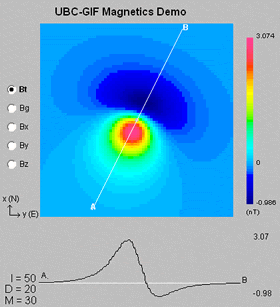

Data

Fig. 40 Contributions to a magnetic measurement
In this section we present a summary about the different types of magnetic data. Different assumptions are made depending on the type of instrument used during acquisition.
Magnetic field data
As demonstrated in Fig. 40, the magnetic field measured above the surface is a vector quantity. The magnetic field data measured at any location contains the signal from both the source (\(\mathbf{B}_0\)), as well as the response (\(\mathbf{B}_A\)) from magnetized material:
In ideal cases, magnetic surveys would measure all three components of the field (fluxgate magnetometer). The magnetic field anomaly, the quantity of interest, is readily available by simple subtraction of the inducing field such that:
The acquisition of three-components data remains challenging however. The orientation of each components needs to corrected in real-time in order to compensate for sensors rotation. Most surveys measure instead the total strength of the field, or Total Magnetic Intensity data:
Since we do not know the direction of \(\mathbf{B}_A\) we assume that the anomalous field is mostly induced and that it’s direction aligns with the Earth’s inducing field \(\mathbf{B}_0\). This allows us to approximate the Total Magnetic Anomaly datum:
This assumption holds as long as \(\mathbf{\hat B}_0 \gg \mathbf{\hat B}_A\), which is valid in most cases considering the strength of the Earth’s field.
Gradient measurements
When buried objects are the target, geophysical surveys must usually detect features with high magnetic susceptibility and/or high electrical conductivity. Some objects will be magnetic, but others have negligible magnetic susceptibility (such as aluminum or some forms of stainless steel). When the buried targets are expected to be magnetic, measurements of variations in the strength of Earth’s magnetic field often produce excellent results. However, because of the many ferrous objects and electrical sources of magnetic fields under and around industrial sites, total field anomaly maps may be too complicated to interpret, or subtle variations may be overwhelmed by larger features. A gradient survey is often a better choice under these conditions because the magnetic field gradient varies more rapidly than total field strength and it, therefore, provides higher spatial resolution. This is illustrated by the interactive figures below.
| 
|
Left: The total field and gradient responses above a dipolar magnetic anomaly are shown for a location where inclination is 50°, and declination is 20°. |

In addition to higher spacial resolution, temporal variations are automatically eliminated because the measured parameter is a difference of two total field measurements. Therefore, the base station measurements and subsequent data corrections normally required for total field surveys are not required. If the goal is to map variations in geological materials, then more subtle trends in magnetic response must be observed.
The vertical gradient is measured using two sensors at (typically) 2 and 3 meters above the ground. Horizontal gradient surveys can be conducted if the sensors can be mounted some distance apart on a frame.